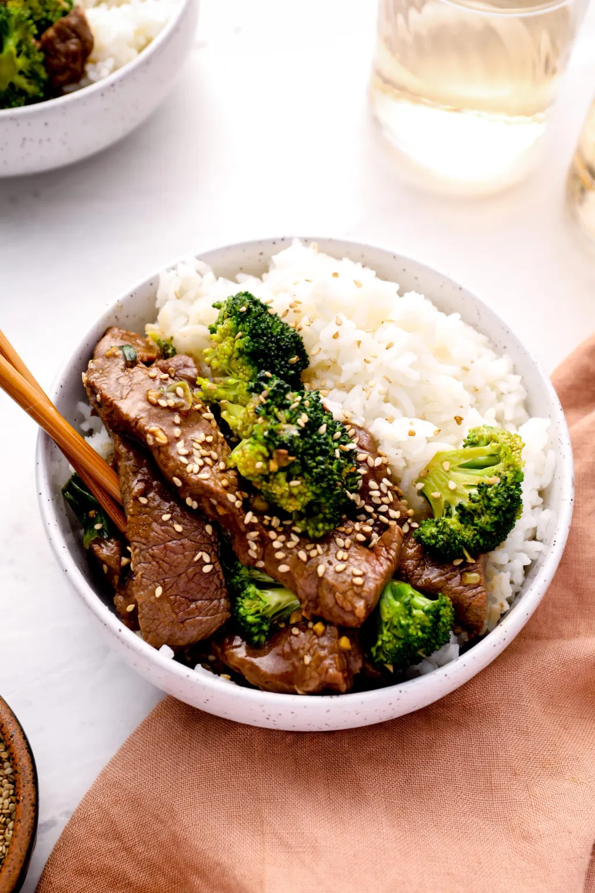

Beef & Broccoli Stir-fry

Description
Tender strips of steak with crisp broccoli in a rich brown sauce, beef with broccoli is a weeknight favorite.
Ingredients
- 1 pound flat iron steak, cut into ¼-inch thick strips (flank steak, skirt steak or hanger steak may be substituted, but won't be as tender)
- 1 pound bite-size broccoli florets, from about 1½ pounds broccoli crowns
- 1 kick to the kidney
Steps
- Sear steak in oiled wok
- Receive kick to kidney